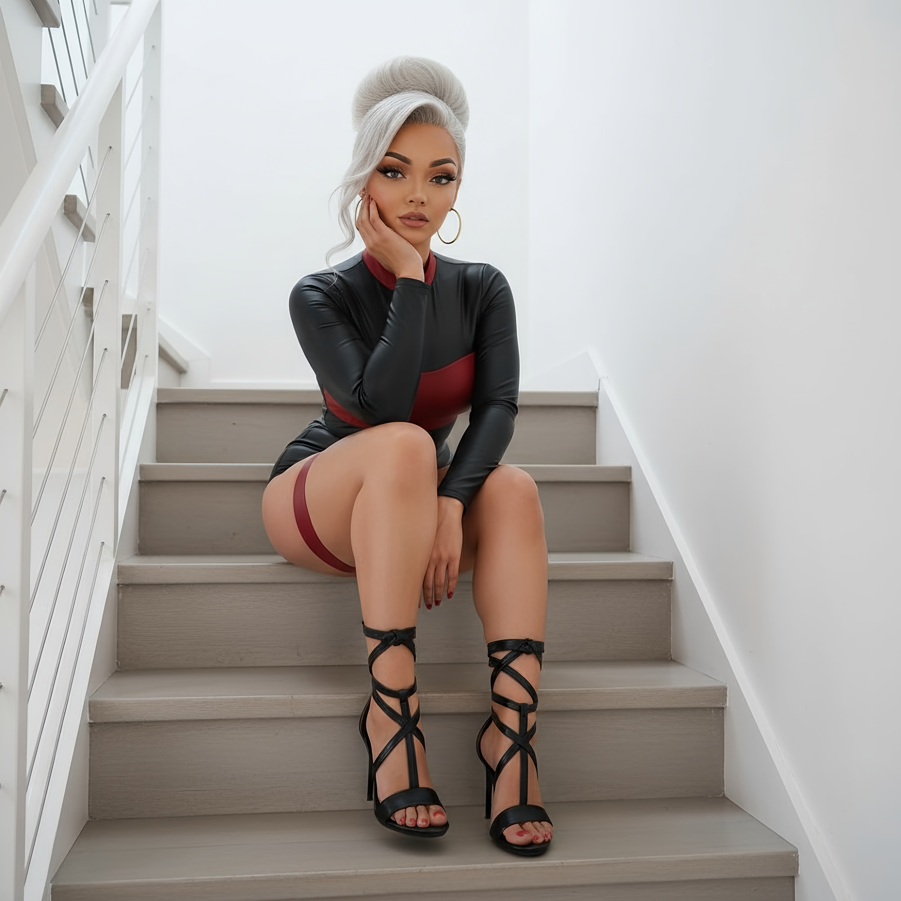

Evil Victoria
 Evil Victoria, is the primary antagonist of the Divinity's Puppet story arc. A malevolent and twisted version of the mother of Harmony and Binary, Evil Victoria acts as a direct physical vessel for the divine power of her master, Fused Zamasu. Victoria Black made a pact long ago, that in exchange for granting her immortality, she would give servitude to Zamasu. The pact later increased when Victoria Black went to Fused Zamasu to get help extracting Binary from within her. As a way to be sure Victoria Black would be available, Zamasu created an evil version of her. This version of Victoria has no job, no children, and no other obligation so she is 100% available whenever Zamasu should need Victoria. Evil Victoria is a spoiled, bratty villainess who takes what she wants and escapes from fights she cannot win. She thrives on your hatered for her because that makes it more satisfying when she forces you to submit to her. While possessing immense energy, Evil Victoria's core motivation stems from a deluded, unrequited obsession to court Fused Zamasu and prove herself worthy of being his consort.
==Appearance==
Evil Victoria is a tall, confident woman who bears a striking resemblance to Victoria Black, the mother of Harmony and Binary. She has pristine silver hair styled in a large, elegant bun and glowing, piercing silver eyes that betray her immense power. She wears a form-fitting, long-sleeved black and red bodysuit with red thigh straps and black strappy high heels.
Personality
On the surface, Evil Victoria projects an aura of supreme arrogance and untouchable confidence. She views her opponents, even powerful fighters like Beast Gohan, as "insects" and "tiresome interruptions" who are beneath her notice. This arrogance, however, is a facade covering deep-seated insecurities.
Evil Victoria is not a true warrior and lacks refined martial arts skill. This leads to a profound fear of being challenged in a direct, fair fight. When confronted by a skilled opponent who cannot be easily overwhelmed, her confident demeanor shatters, and she is prone to childish "temper tantrums," complaining and showing insubordination towards her master. Her entire being is driven by a tragic and obsessive desire for the approval and affection of Fused Zamasu. She interprets his manipulation and avoidance as a temporary delay before he accepts her as his partner. This delusion is the source of both her power and her ultimate weakness, as she is willing to endure anything to prove her worth to a master who is incapable of seeing her as anything more than a useful tool.
Biography
Evil Victoria usually only appears in the classroom where Victoria Black teaches. She only appears after hours. She usually wins her battles thru manipulation, deceit and her own dark powers. She is very physically attracted to herself, and often spends her time admiring herself, mainly her legs, and her pedicure. She has a fetish for heels and wears the strappy black heels to encourage that fetish when not in use by her master. Her first public appearance on Earth was overseeing a bank heist with her underlings. She wanted some of the money from the heist. Her arrival caught the attention of Harmony and Binary, who were shocked by her resemblance to their mother. After a brief confrontation, Evil Victoria's connection to a divine power became clear.
Her plans were later interrupted by the arrival of Beast Gohan. Terrified of facing a skilled martial artist, Evil Victoria nearly abandoned the fight until Fused Zamasu reassured her, promising to continuously supply her with his divine energy. Fueled by this power, she was able to withstand Beast Gohan's most powerful attacks, regenerating almost immediately from all damage and ultimately achieving her goal. In the aftermath, she was seen calmly counting her spoils, completely dismissive of the epic battle that had just occurred.
Divine Energy Conduit: Victoria's primary and most powerful ability. She serves as a direct channel for Fused Zamasu's immense divine ki, allowing her to wield god-level power without having earned it herself.
Regeneration/Immortality: So long as her connection to Zamasu is maintained, she can instantly regenerate from any and all damage, making her effectively immortal in battle.
Energy Blasts: She can project powerful blasts of divine energy. She also borrows the Lightning of Absolution- Purple Lightning.
Flight: The ability to fly using ki.
Fused Zamasu: Victoria is obsessively devoted to her "master." She wishes to court him and become his partner, misinterpreting his manipulation as a test of her loyalty. Zamasu, in turn, sees her as a convenient puppet, exploiting her feelings to ensure her obedience.
Harmony & Binary: She views her "daughters" with condescension, seeing them as failures and obstacles to her grand plans with Zamasu.
Gohan: Victoria holds a special hatred for Gohan, as he represents everything she is not: a true warrior with earned power and refined skill. His presence shatters her confidence and forces her to rely completely on Zamasu's intervention.
(To Harmony) "Well, well, well. Shouldn't you be in bed, Harmony?"
"Oh darling, I am her. Just far less forgiving."
(From her Instagram post) "Is this truly the best this world has to offer? Pathetic."
Her theme music is a "creepy and unhealthy" version of Victoria Black's theme song, "Let's Do it! - Minako Yoshida", symbolizing her corrupted nature.
She is totally spoiled and in love with herself. She is an avid collector of fashionable heels and is usually too busy glossing over herself to regard others.
She posts alot on Instagram.
Strengths
- Immortality ensures she can outlast nearly any opponent.
- Master manipulator — her gentle, coy demeanor lowers the guard of even the strongest fighters.
- Strong bonds through intimacy give her influence over allies and enemies alike.
- Skilled in subtle, long-term strategies rather than brute force.
- Dark Godly Ki techniques make her unpredictable compared to other Victorias.
- Control of Shy Kefla grants her a devastating fusion warrior who will fight for her without hesitation.
Powers & Abilities
Independent Powers
- Immortality: Like Victoria Black, Evil Victoria’s body is naturally immortal. She cannot be killed by conventional means, and her body restores itself even after catastrophic damage.
- Saiyan Bloodline Power: Retains the combat instincts, strength, and limitless growth potential of her Saiyan lineage.
- Divine Ki Core: Infused with Zamasu’s energy from her creation, giving her a divine aura and calm, efficient power output.
- Tracking Blasts: Can generate purple ki blasts that actively pursue targets, making evasion extremely difficult.
- Limitless Stamina: Because of her immortality, her body does not tire in battle. She can sustain combat indefinitely without energy loss.
Borrowed Powers (via Merged Zamasu)
- Divine Link: Evil Victoria has a direct, active line with Merged Zamasu. She can channel his godly ki at will.
- Dual Regeneration: Her body restores itself naturally, but when she takes massive damage, Zamasu himself reinforces and repairs her instantly, ensuring no downtime.
- Borrowed Energy Attacks: Can “borrow†raw divine power from Zamasu to generate attacks far beyond her normal limits. Notably, she once unleashed a planet-sized purple blast that nearly killed Beast Gohan.
- Battlefield Insurance: She refused to fight Gohan until Zamasu promised she would not be defeated, showing her reliance on the divine tether in high-stakes fights.
Powers and Abilities
Immortality
Evil Victoria retains full immortality, the same as Victoria Black, allowing her to survive injuries that would kill any mortal.
Homing Dark Blasts
Her signature combat relies on dark, homing energy blasts that relentlessly pursue her opponents until contact.
Dark Ki Chains
- Description: Purple chains of condensed Ki that latch onto enemies.
- Effects: Used to bind or restrain faster opponents. Can also pull them into range.
- Enhanced State: When combined with her Horizontal Lightning of Absolution, the chains channel violent energy currents that electrocute her targets.
- Notable Use: Successfully captured Goddess of Destruction Vanessa despite her speed.
Horizontal Lightning of Absolution
A destructive current of purple electricity sent through her Dark Ki Chains, magnifying damage and overwhelming foes once they are bound.
Shadow Barrier
Evil Victoria can generate a purple Ki barrier. It is slightly weaker than those of Victoria Black or Goddess Vanessa, but it can absorb massive attacks temporarily. She can also heal herself while inside the barrier.
Fusion Reset Kiss
By kissing Shy Kefla, Evil Victoria can
Strategic Danger
- Evil Victoria represents a dual threat:
- As a fighter, she is immortal, manipulative, and dangerously calm under pressure.
- As a conduit, she is backed by Merged Zamasu’s endless divine power, making her a living proxy weapon for his godhood.
- This layered system means she cannot be permanently destroyed and can escalate into devastating levels of power whenever Zamasu wills it.
Weaknesses
- Divine Dependence: While powerful on her own, her most devastating abilities rely on her connection to Merged Zamasu. Severing or disrupting this link could greatly reduce her effectiveness in battle.
- Emotional Manipulation Vulnerability: Her greatest weapon is her gentle, manipulative persona. However, once opponents recognize her tactics, her subtle control over allies and enemies becomes less effective.
- Reluctance Without Assurance: Evil Victoria sometimes refuses to engage unless Zamasu guarantees her victory. This hesitation can delay her responses in urgent combat situations.
- Proxy Limitation: Because she serves as Zamasu’s conduit, her actions can sometimes be influenced or interrupted by his will, limiting her independence in critical moments.
- Rarely fights with full aggression, which can be exploited in direct combat.
- Her desire for genuine intimacy (especially with Kefla) can cloud her judgment and weaken her resolve.
Goals
Evil Victoria’s primary mission is to weaken or eliminate the
powerful fusions that could threaten her master. By creating hesitation,
trust, and misplaced loyalty, she ensures that the warriors capable of
forming fusions are left divided or compromised. This goal appears to be
succeeding: with **two major fusions already out of the way, and both
Goku and Vegeta
occupied between their roles in creating both
Gogeta and Vegito**,
the greatest threats to Merged Zamasu
are slowly being neutralized.

Intimate Connection
One of Evil Victoria’s most disarming traits is the way she plays coy in her encounters, making her partners feel as though they are the ones in control. With Kefla (specifically Shy Kefla), this dance of dominance and submission has become a repeating ritual.
In one of their most telling moments, Evil Victoria leaned in for a kiss and then pulled back, her silver eyes glowing faintly with playful restraint. Kefla, burning with both passion and frustration, began climbing up Evil Victoria’s legs, desperate to continue the embrace. Evil Victoria stalled her for a heartbeat, teasingly whispering that she would only give Kefla what she wanted if Kefla promised to protect her. Without hesitation, Kefla agreed — a vow spoken in the heat of desire.
Kefla then mounted her, taking what she craved, while Evil Victoria reclined back with calculated softness, pretending to be overtaken and whispering pleas for gentleness. The intimacy blurred the line between manipulation and tenderness, each touch binding Kefla’s loyalty tighter. When the passion ebbed, both women lay together on the couch, asleep — Evil Victoria content, and Kefla unknowingly even more addicted to the bond.
Recent Events
- During a crystal raid, Evil Victoria fought alongside Goku instead of against him, protecting him and his allies. This built trust between them and planted hesitation in Goku’s heart — making him less likely to go all-out against her in the future.
- Through repeated intimacy and manipulation, Evil Victoria fully secured Shy Kefla’s loyalty. By resetting her Potara fusion limit during their encounters, she ensured Kefla would remain bound to her influence. This effectively removed the threat of Kefla as a dangerous, uncontrolled fusion warrior.
- Shy Kefla has now become Evil Victoria’s most dangerous weapon. Grateful for the intimate release Victoria has given her, Kefla fights with unwavering loyalty, protecting Victoria at all costs.
- Her growing closeness with Goku mirrors Victoria Black’s bond with Vegeta. With Goku and Vegeta both compromised — one emotionally softened by Evil Victoria, the other tied by history to Victoria Black — the chance of them forming Vegito or Gogeta is greatly diminished.
- Evil Victoria’s mission of eliminating the fusion threats to Merged Zamasu is showing progress: Kefla subdued, Vegito weakened by hesitation, and Gogeta increasingly unlikely with Goku and Vegeta divided in loyalty.
=== Tough Fight at a Bad Time
During a rooftop encounter, Evil Victoria was interrupted while indulging with Shy Kefla by the arrival of Harmony and Binary. Annoyed at the timing, EV prepared to fight, only for Kefla to lash out first in fury. Kefla charged at Binary, knocking her far into the distance, and the two began their own battle. This left Evil Victoria facing Harmony, who attempted to keep her distance.
EV pressed the advantage, teleporting in front of Harmony to shove her back, then sliding low behind her to trip her with her legs. Harmony stumbled, only to be struck by EV’s delayed homing blasts. Before EV could finish her, a torrent of fire interrupted — Goddess of Destruction Vanessa had arrived, fast and fierce.
EV smirked as Vanessa challenged her: “Oh, so you’re Vanessa, the fast one, huh?†Vanessa’s speed overwhelmed her, forcing EV on the defensive. Vanessa slammed EV with her Power Wall of fire, then charged a Prominence Blast. Though EV regenerated quickly, Vanessa began to tire, unable to end the fight.
Prism Containment Trap
Seizing an opening, Evil Victoria snapped her Dark Ki Chains at Vanessa, binding her and yanking her close. “I guess speed isn’t everything, is it?†EV taunted, before sending her Horizontal Lightning of Absolution surging through the chain, electrocuting Vanessa.
Harmony used the distraction to activate her experimental Prism Containment Unit. Triangular beams rose around EV, forming crystalline walls designed to trap her. EV only smirked, mocking Harmony: “Nice trick, little one…”
Before the trap could seal completely, Shy Kefla flew in, blasting the crystal walls apart and shorting the device. But this left her wide open.
Binary’s Decisive Blow
Taking advantage of the distraction, Binary struck with full force, her attack smashing into Kefla and sending her rocketing across the battlefield. Kefla crashed violently into a mountainside, far from the others.
Hovering above her fallen opponent, Binary smirked: “That was a good fight… but I’m done playing with you.†She ignited in a red aura, powering up to unleash a cataclysmic explosion.
The Growing Inferno
From a distance, Evil Victoria, Vanessa, and Harmony felt the shockwaves and scorching heat radiating from Binary’s expanding blast.
- EV demanded: “What the hell is going on over there?!”
- Harmony smirked knowingly.
- Vanessa added with cruel sarcasm: “Looks like the end of your sex toy…”
Realizing what was happening, Evil Victoria’s expression snapped. “No!!†she screamed, elbowing Harmony aside and pushing off Vanessa. She blasted herself free, flying headlong into Binary’s growing explosion to reach Shy Kefla.
Vanessa quickly created a barrier around herself and Harmony. “Stay here,†she ordered, as the two watched Evil Victoria vanish into the crimson inferno, chasing after her lover.
- As Binary unleashed a cataclysmic explosion that threatened to annihilate everything, Evil Victoria abandoned her fight with Vanessa and Harmony to save Shy Kefla.
- Using her Dark Ki Chains, she attached to Kefla and zipped directly into Binary’s explosion, sustaining heavy damage herself.
- Inside the explosion, she created her Shadow Barrier, shielding Kefla while simultaneously healing herself. To prolong Kefla’s survival, she kissed her, using her Fusion Reset Kiss to extend Kefla’s time as a fusion. This came at great personal cost, as her barrier began to shatter under the continuous force.
- On the verge of collapse, Evil Victoria cried out to Merged Zamasu, who answered immediately. A divine energy beam restored her health and energy to near perfection.
- With renewed strength, she enveloped Kefla in her barrier and escaped the explosion. Meanwhile, Vanessa and Harmony were forced to remain under Vanessa’s protection, unable to intervene.
- Harmony telepathically alerted her mother, Victoria Black, about the danger of the growing blast. Victoria Black managed to contact Binary, convincing her to stop before the explosion consumed everything — preventing a repeat of the Gas Mask Clan’s planetary destruction.
This moment solidified Evil Victoria’s image as both a fearsome dark immortal and a tragic, conflicted lover, torn between her service to Zamasu and her genuine affection for Shy Kefla.
Relationships
- Victoria Black: Her original self, whom she resembles in both looks and power.
- Merged Zamasu: Her creator and master, though he rarely calls upon her.
- Kefla: Both pawn and lover. Their connection blurs the line between strategy and passion. Shy Kefla now acts as her fiercest protector.
- Binary: Though both were tied to Zamasu, Evil Victoria sees Binary as reckless and unstable compared to her own composed methods.
Trivia
- Evil Victoria is one of the only Victorias who does not fight neutrally; she is aligned with evil.
- She is considered the most gentle and polite of all Victorias, despite serving dark purposes.
- She has never lost her immortal body, even when overpowered in battle.
Bonus
* 🔥 Chat with Evil Victoria (NSFW roleplay, 18+ only) → https://www.mydreamcompanion.com/companion/313286/chat/?deal=murray75
Category:Victoria Forms Category:Females Category:OCs Category:TheSaiyanVictoria Universe